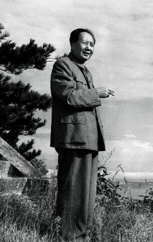

Related pictures


- 

Selected Works of Mao Zedong is a concentrated expression of Mao Zedong Thought and one of the most influential books on China in the 20th century.
"Selected Works of Mao Zedong": compiled by the Literature Research Office of the CPC Central Committee and published by the People's Publishing House in succession since 1993, Mao Zedong's important manuscripts other than "Selected Works of Mao Zedong" have been compiled.

Mao Zedong's poems refer to the old style poems created by Mao Zedong. Following the "Interpretation of 18 Poems by Chairman Mao" in the early days of liberation, 43 poems were published by the end of the 1970s, including 14 poems and 29 words.